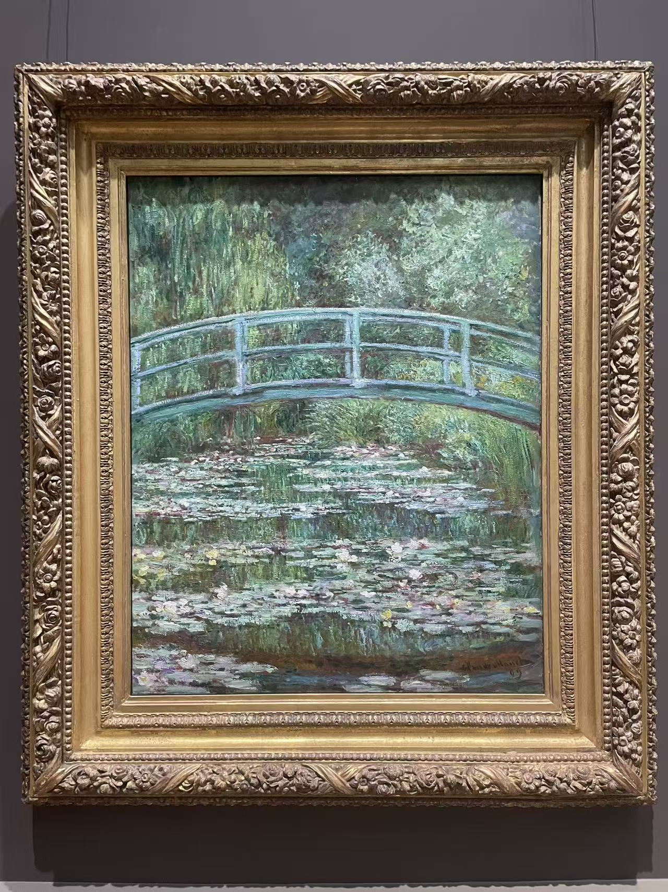
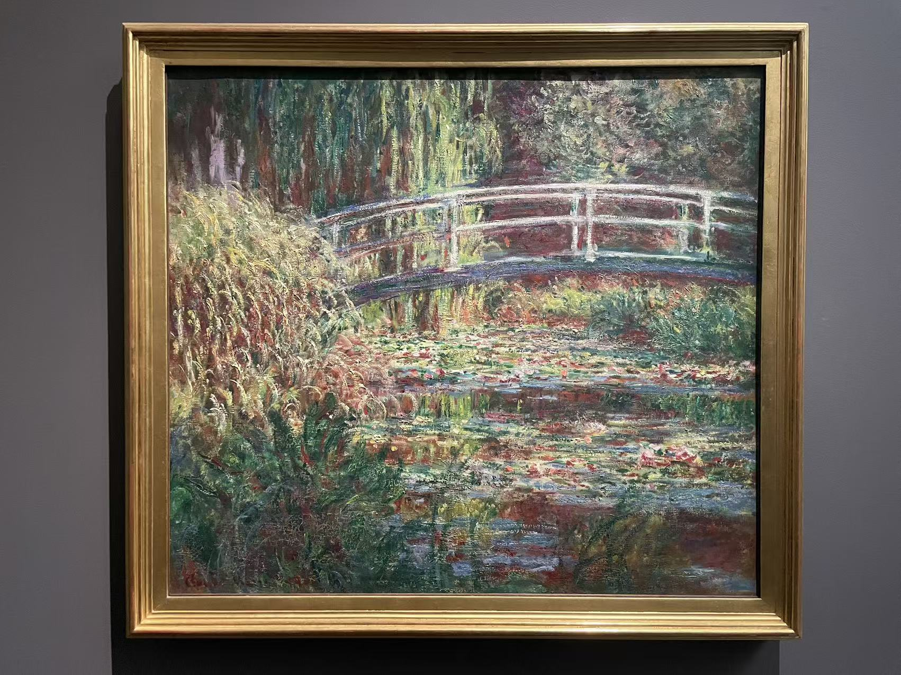

CLAUDE MONET / 池塘与日本桥
睡莲池，粉红色的和谐
Le Bassin aux nymphéas, harmonie rose

- 作者
- 克洛德·莫奈
- 年代
- 1900年
- 材料
- 布面油画
- 尺寸
- 90 × 100.5厘米
- 收藏／所在
- 奥赛博物馆 · 巴黎
- 编号／位置
- RF 2005
看画
桥横过繁密的花园，粉色与紫色散在绿叶之间。先看桥的弧线，再看桥下水面上平行展开的花叶。
作品札记与资料
粉红色并没有覆盖整幅画，而是分散在桥身、花朵和水面笔触之间，与大片绿意互相衬托。与1899年的几幅日本桥相比，这张的花园显得更拥挤，桥也更像被植物包围着。
据奥赛的收藏记录，杜朗－吕埃尔于1900年11月21日向莫奈购画，第二天便卖给伊萨克·德·卡蒙多伯爵。1911年随卡蒙多遗赠进入法国国家收藏，最初归卢浮宫，1986年划归奥赛。
基本信息据馆方资料与已有现场展签 · 2026年10月核对。